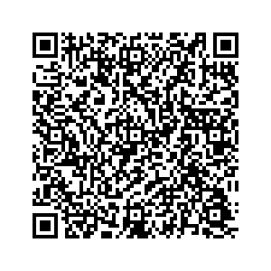

Apunta con el teléfono para abrir la misiónEn un aula de 43 alumnos con tres teléfonos, la misión no le llega a todos. Esta hoja lleva lo mismo en papel. Se fotocopia, se lleva a casa y funciona sin señal y sin luz.
El abuelo le dejó el machete a Elvin. Hace años le cambiaron el mango. El verano pasado, la hoja. Ahora su hermana dice que ese ya no es el machete del abuelo, que del de él no queda nada, y que entonces le toca la mitad de lo que valga.
Pregunta de qué está hecho el mundo. Se llama Metafísica, y pregunta: ¿Qué es real? ¿Qué cambia y qué se queda?
Buscar las piezas con las que está armado el mundo.
La piedra, el agua y vos, ¿tienen algo igual por dentro?
Esta se la pasó a la ciencia, y la ciencia la está midiendo.
Ver qué le puede pasar a algo sin que deje de ser eso.
Al machete le cambiaron el mango. ¿Sigue siendo el mismo?
Esta se discute todavía, y se discute en los juzgados.
Separar lo que está ahí de lo que uno cree que está ahí.
El reflejo del cerro en la laguna, ¿es un cerro?
Esta se usa todos los días, y casi nadie la nota.
Preguntar por qué existe el mundo, en vez de no existir nada.
No hay forma de medirla. Ni un aparato la contesta.
Esta sigue abierta. Nadie la ha cerrado, y se vale decirlo.
Hay tres clases, y cada una tiene su prueba. La prueba es una pregunta: se la haces al cambio y él te contesta cuál es.
La materia es la misma. Solo se acomodó de otro modo.
La prueba: Preguntate: ¿sigue siendo la misma sustancia?
Lo que quedó es otra sustancia: otro color, otro olor, otro sabor.
La prueba: Preguntate: ¿quedó algo distinto de lo que había?
A la cosa no le pasó nada. Cambió su nombre, su dueño o su lugar.
La prueba: Preguntate: ¿le pasó algo A LA COSA, o solo a lo que decimos de ella?
El caso de Elvin y tres más. Ninguno tiene una sola respuesta buena, y eso no es un fallo: es lo que hace dura la pregunta. Lo que sí se puede hacer es decir tu regla antes y aplicarla igual a los cuatro.
Le cambiaron el mango. Años después, la hoja.
Lo que lo decide: Si lo que hace a una cosa es de qué está hecha. O para qué sirve.
El agua de hoy no es la de ayer. Ya bajó toda.
Lo que lo decide: Si lo que hace a una cosa es su material. O su forma y su camino.
Casi todo tu cuerpo se ha ido cambiando por dentro.
Lo que lo decide: Si lo que te hace vos es tu cuerpo, o lo que recordás.
Cambiaron las aulas, los maestros y todos los alumnos.
Lo que lo decide: Si lo que hace a una escuela son las personas. O lo que se hace ahí.
Estas cuatro preguntas las hizo la filosofía cuando no había con qué medirlas. Hoy la ciencia las contesta con una balanza y una tabla. Mira qué cambió y qué no.
¿De qué está hecho todo?
Se contestó con cuatro cosas: agua, aire, fuego y tierra.
Hoy se cuentan y se ordenan en una tabla: son los elementos.
La filosofía hizo la pregunta. La química la fue midiendo.
¿Hay una pieza que ya no se pueda partir?
Se dijo que sí, y se le puso un nombre: átomo, «que no se parte».
Hoy se sabe que el átomo SÍ se parte. El nombre le quedó grande.
La idea sirvió aunque el nombre falle: todo está hecho de piezas.
¿Se pierde la materia cuando algo se quema?
Parecía que sí: de un tronco grande queda un puño de ceniza.
Hoy se pesa lo que entra y lo que sale, y da lo mismo. Nada se pierde.
Lo que faltaba no era pensar más: era una balanza.
¿El aire es algo, si no se ve?
Se dudó de que fuera algo, justamente porque no se ve.
Hoy se pesa y ocupa lugar. Es materia, como la piedra.
Lo que no se ve puede ser real. Eso lo decide la medida.
Una cosmovisión es la forma entera en que un pueblo explica el mundo. Y explica también su lugar en él.
Todos tenemos una, aunque nunca la hayamos escrito. Se aprende oyendo en la casa.
Toda cosmovisión contesta estas tres:
| Palabra | Qué quiere decir |
|---|---|
| materia | Aquello de lo que está hecha una cosa. Pesa y ocupa lugar, aunque no se vea. |
| forma | El modo en que está acomodada esa materia. La misma masa da tortilla o bola. |
| cambio | Que algo deje de ser como era. No todo cambio le pasa a la cosa. |
| real | Lo que está ahí aunque nadie lo esté mirando ni lo crea. |
| cosmovisión | La forma entera en que un pueblo explica el mundo y su lugar en él. |
| átomo | La palabra quiere decir «que no se puede partir». Se puso pensando, no midiendo. |
Uno pensó las piezas sin verlas; los otros dos no se pusieron de acuerdo, y su discusión sigue abierta. Aquí no hay ni una fecha, y no es un olvido: una fecha que no se puede acreditar no se escribe. Ponerlas es la investigación de más adelante.
Grecia
Pensó que todo está hecho de piezas chiquitísimas que se repiten.
Qué hizo: Les puso nombre sin verlas nunca: átomos, «lo que ya no se parte».
Por qué se le recuerda: Llegó pensando a una idea que la ciencia después fue a medir.
Dato: El nombre falló: el átomo sí se parte. Pero la idea de las piezas acertó.
Grecia
Dijo que todo cambia siempre, sin parar, aunque no se note.
Qué hizo: Puso el ejemplo del río: no te bañás dos veces en el mismo.
Por qué se le recuerda: Obliga a explicar por qué decimos «el mismo río» si el agua ya se fue.
Dato: Para él lo raro no es que algo cambie: es que algo parezca quedarse.
Grecia
Dijo lo contrario: que lo que es, es, y no puede dejar de ser.
Qué hizo: Sostuvo que el cambio que vemos nos engaña y hay que desconfiar.
Por qué se le recuerda: Enseña a no ganar una discusión solo con lo que uno ve.
Dato: Él y Heráclito nunca se pusieron de acuerdo. La discusión sigue abierta.
| Materia | Qué le deja |
|---|---|
| 🌱 Ciencias Naturales | Le dio la pregunta de arranque. De qué está hecho todo y cómo cambia. Pruébalo hoy: En tu cuaderno: el bloque de la materia contesta lo que aquí se pregunta. |
| 🔢 Matemáticas | Le deja una pregunta incómoda: ¿dónde está el número 7 cuando nadie lo escribe? Pruébalo hoy: Un número no se puede tocar ni pesar, y sirve igual. Pensá por qué. |
| 🌎 Ciencias Sociales | Le da las cosmovisiones: cada pueblo explica el mundo entero a su modo. Pruébalo hoy: Averiguá qué pueblos originarios hay en tu departamento, y desde cuándo. |
Escribe F si cambió la forma, M si cambió la materia y D si solo cambió lo que decimos.
| F, M o D | El cambio |
|---|---|
| La hoja de papel se vuelve avión | |
| La leche se corta | |
| A la escuela le cambian el nombre | |
| Tu amigo se va a vivir lejos y ahora le decís así | |
| El alambre se dobla para hacer un gancho | |
| El hielo del vaso se derrite | |
| El terreno pasa a nombre de otro dueño | |
| La leña se vuelve ceniza | |
| El guineo se pone negro | |
| La masa se vuelve tortilla | |
| El clavo se llena de herrumbre | |
| La aldea se vuelve municipio |
Une cada prueba con su clase de cambio. Escribe la letra en el paréntesis.
| ( ) | La pregunta que se le hace al cambio | La clase |
|---|---|---|
| Preguntate: ¿quedó algo distinto de lo que había? | a) 🔵 Cambió la forma | |
| Preguntate: ¿le pasó algo A LA COSA, o solo a lo que decimos de ella? | b) 🟠 Cambió la materia | |
| Preguntate: ¿sigue siendo la misma sustancia? | c) ⚪ Cambió lo que decimos |
Primero escribe tu regla. Después contesta los cuatro casos con la misma regla.
| Sí o no | El caso | Por qué, con mi regla |
|---|---|---|
| 🔪 El machete del abuelo: Le cambiaron el mango. Años después, la hoja. | ||
| 🏞️ La quebrada del pueblo: El agua de hoy no es la de ayer. Ya bajó toda. | ||
| 🧒 Vos, desde el kínder: Casi todo tu cuerpo se ha ido cambiando por dentro. | ||
| 🏫 La escuela: Cambiaron las aulas, los maestros y todos los alumnos. |
Completa qué se contestaba antes, pensando, y qué se mide hoy.
| La pregunta | Antes se contestó… | Hoy se mide… |
|---|---|---|
| ¿De qué está hecho todo? | ||
| ¿Hay una pieza que ya no se pueda partir? | ||
| ¿Se pierde la materia cuando algo se quema? | ||
| ¿El aire es algo, si no se ve? |
Aquí no hay respuestas escritas, y no es un descuido. Estas se averiguan donde vivís, porque es ahí donde están.